raj2g
请注意:
Yallage的外置验证地址是 https://skin.qianyiovo.com/api/yggdrasil
Yallage的外置验证注册地址是 https://skin.qianyiovo.com/
您需要验证邮箱才能正常游玩游戏.当您按照正规流程注册犽之谷账户中心之后,您会收到noreply@yallage.com发来的名为"在 犽之谷账户中心 上驗證您的電子郵件地址"的邮件,届时请点击邮件附带的链接进行验证。
- Frequently Asked Questions - FAQ常见问题集合
- *正版用户可以直接进入服务器
- 前往 犽之谷账户中心 注册账号（Outlook 邮箱不受支持，其他邮箱可能需要等待 5 ~ 7 分钟才能收到验证邮件）
- 请注意：如果您此前已经在犽之谷游戏内注册了账号，并且已经游玩了一段时间，请使用此前在犽之谷服务器内使用的玩家名作为账户中心的角色名！否则您将丢失您此前的游戏进度！同时，如果您此前游玩服务器同样使用的是正版账号，我们推荐您使用正版账号直接登录游戏服务器！
- 在犽之谷账户中心注册后，前往注册填写的邮箱内激活账户，激活账户后即可自由设置皮肤。
- 完成以上步骤后，请务必牢记您的帐号密码，若丢失密码，您仍然可以前往犽之谷账户中心使用注册时填写的邮箱找回密码。此账号通用于犽之谷反馈中心、犽之谷游戏服务器内、注册账号的账户中心。从第四步开始，我们将介绍如何在启动器中添加犽之谷账户中心为认证服务器，并登录游戏，如果您熟悉如何在启动器中添加第三方认证服务器，那么只需要登录后即可畅玩犽之谷
特别说明的是：官方启动器不支持第三方认证服务器，或者说没有直接使用第三方启动器来得简单，所以推荐使用HMCL(点击跳转至官网)或PCL(点击跳转至官网)
HMCL使用第三方认证服务器
- *感谢hanbings提供的教程
- 对于Linux和Mac用户，您需要先下载Java，并在HMCL所在目录下执行 java -jar "HMCL启动器程序名.jar" 才能运行HMCL.
- 打开HMCL启动器，并点击新建玩家
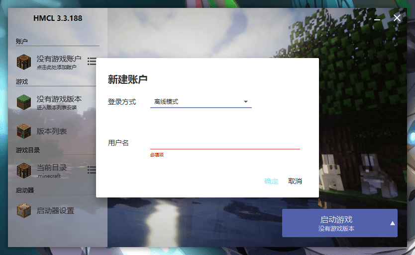
- 选择外置登录
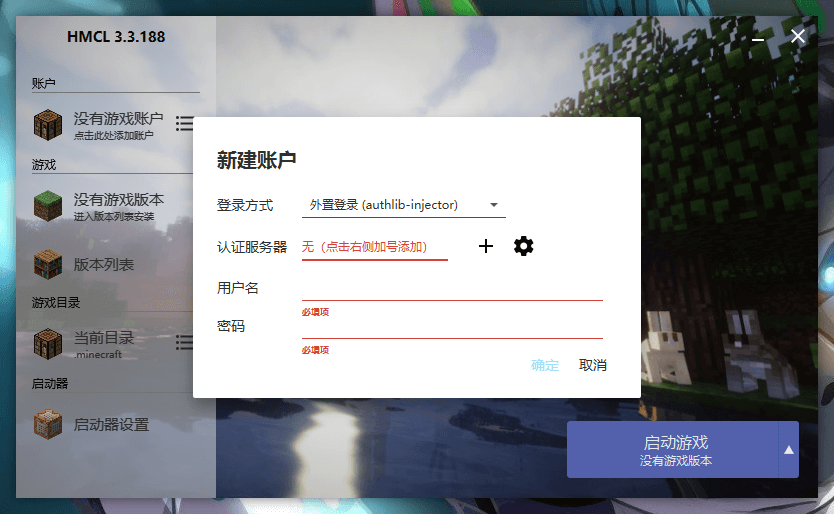
- 添加犽之谷账户中心地址 https://skin.qianyiovo.com/api/yggdrasil
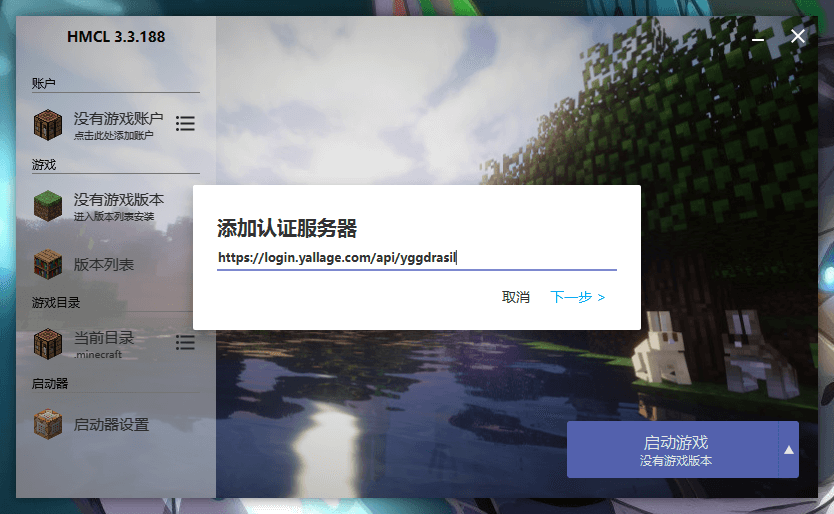
- 点击下一步后在对应框内填入账户中心注册的账户
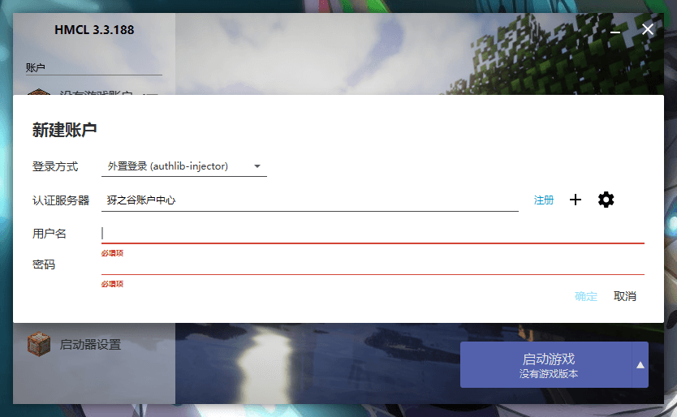
- 点击确定后如下图所示为登录成功
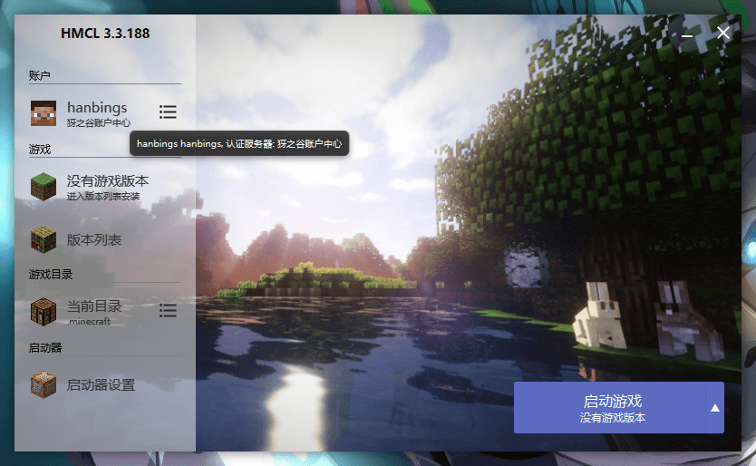
PCL使用第三方认证服务器
- 感谢Pickaxe提供的教程
- *PCL仅支持Windows系统
- 打开PCL启动器，并点击版本设置
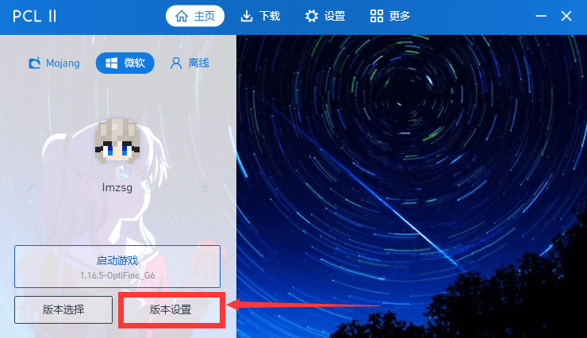
- 点击设置，在最下面找到登陆方式，选择"第三方登陆: Authlib-injector"
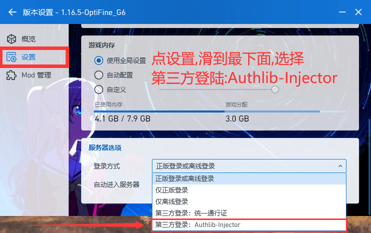
- 认证服务器填写: https://skin.qianyiovo.com/api/yggdrasil 注册链接填写: https://skin.qianyiovo.com/
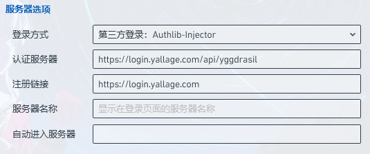
- 如下图所示输入账号密码并登录
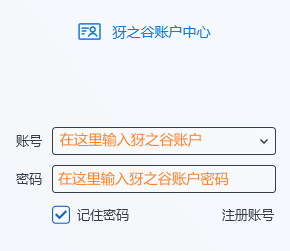
- 如下图所示即为登录成功
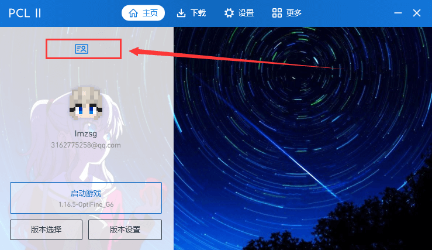
iPheone 和 iPad 使用第三方认证服务器
UTM安装简述
- 必须注意，由于一个 iOS 的系统漏洞，在退出 UTM 时必须使用主界面左上角的叉按钮或者虚拟机运行时工具栏上的关闭按钮，不可在 App 切换器里上滑 UTM 卡片来强制关闭。否则，UTM 可能无法启动或者导致死机，需要重启设备才能恢复正常
- 在创建虚拟机前，您需要先下载好欲安装的系统镜像，并导入到您的设备上。点击UTM SE主界面右上角的加号按钮，可呼出创建虚拟机界面
- 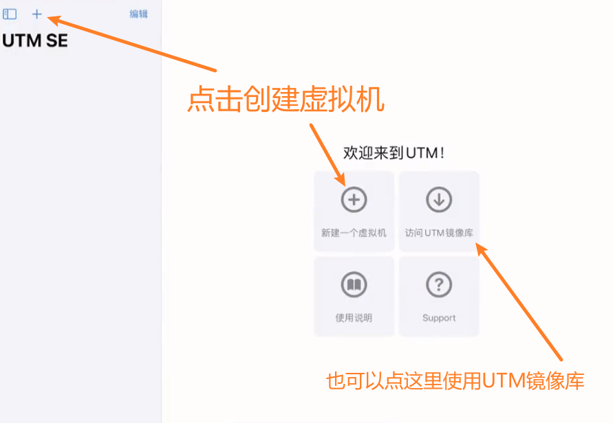
- 新建好虚拟机之后请按物理机器的方法安装系统
- 安装完成之后视虚拟系统和个人喜好选择Minecraft启动器即可
©2021 - kobe-koto | AGPL-3.0 License | GitHub
本网站使用Cookie优化您的体验, 且开源代码的使用受 AGPL-3.0 License 之约束.